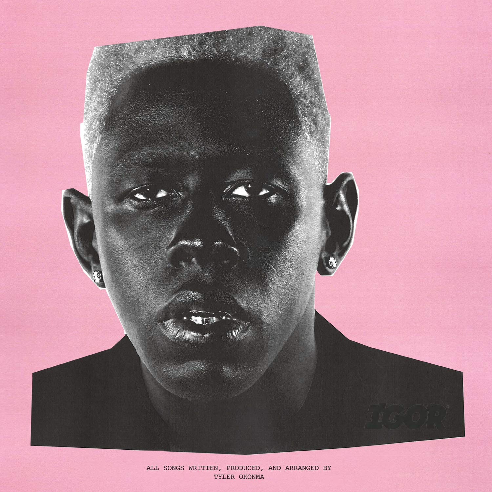
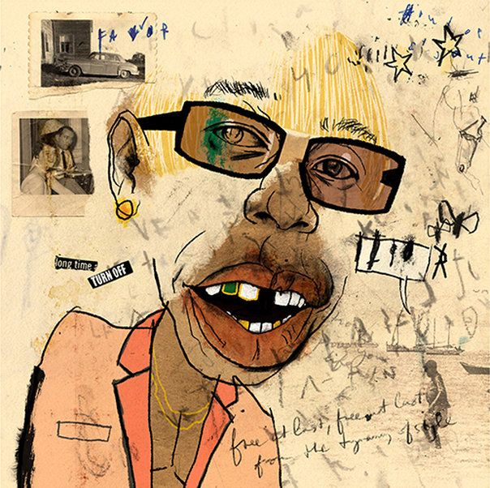

inicio
Lançado em maio de 2019, IGOR é considerado por muitos a obra-prima de Tyler, The Creator. Diferente de tudo que ele já havia feito, o álbum não é exatamente um disco de rap, mas uma mistura de Synth-pop, Funk e Soul experimental. O álbum narra a história de um triângulo amoroso sob a perspectiva do personagem IGOR, que usa uma peruca loira curta e ternos coloridos.
O disco foi inteiramente produzido por Tyler e se destaca pelo uso de sintetizadores distorcidos e vocais com efeitos, criando uma sonoridade "suja" e emocionante. IGOR estreou em primeiro lugar na Billboard 200 e rendeu a Tyler seu primeiro Grammy de Melhor Álbum de Rap, consolidando sua posição como um dos artistas mais criativos do século XXI.
Abaixo, alguns pontos fundamentais sobre a obra:
IGOR é um álbum sobre a vulnerabilidade masculina e a dor de não ser correspondido. Com este projeto, Tyler provou que poderia quebrar todas as barreiras dos gêneros musicais, criando algo que soa ao mesmo tempo nostálgico e futurista.
Primeira capa (Oficial):

Segunda capa (Alternativa):

A Capa Principal: Apresenta uma colagem fotográfica em tons de preto e branco sobre um fundo rosa choque. A expressão de Tyler na foto é enigmática, capturando a essência crua e emocional das letras do álbum.
A Capa Alternativa: É uma ilustração feita pelo artista Lewis Rossignol. Ela apresenta um desenho estilizado e "caótico" do rosto de Tyler, que combina perfeitamente com a produção sonora experimental e as texturas distorcidas do disco.
Destaque: EARFQUAKE
O maior hit do álbum. Uma canção de amor desesperada com vocais melódicos de Tyler e uma participação icônica de Lil Uzi Vert. Ela resume o sentimento de depender emocionalmente de outra pessoa.